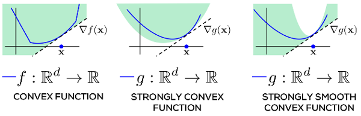
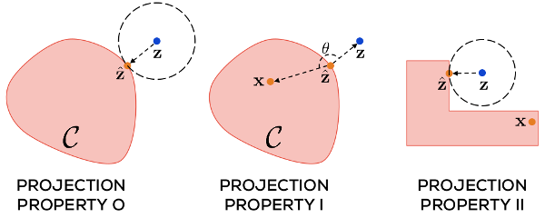

Nonconvex Optimization for Machine Learning (Chapter 2)
Prateek Jain & Purushottam Kar, Non-convex Optimization for Machine Learning
- previous chapter: Introduction
- current chapter: Mathematical Tools
Summary
Definition 1. A convex combination of a set of \(n\) vectors \(\mathbf{x}_i \in \mathbb{R}^p\) is a vector \(\mathbf{x}_{\mathbf{\theta}}\): \[\begin{equation*} \mathbf{x}_{\mathbf{\theta}} = \sum_{i=1}^n \theta_i \mathbf{x}_i, \end{equation*}\] where \(\theta_i \geq 0\) and \(\sum \theta_i = 1\).
Definition 2. A set \(\mathcal{C} \subset \mathbb{R}^p\) is convex if for all \(\mathbf{x},\mathbf{y} \in \mathbb{R}^p\) and \(\lambda \in [0,1]\), the point \((1 - \lambda) \mathbf{x} + \lambda \mathbf{y}\) is contained in \(\mathcal{C}\).
Definition 3. A continuously differentiable function \(f : \mathbb{R}^p \to \mathbb{R}\) is convex if for every \(\mathbf{x},\mathbf{y} \in \mathbb{R}^p\), we have: \[\begin{align*} f(\mathbf{y}) \geq f(\mathbf{x}) + \langle \nabla f(\mathbf{x}), \mathbf{y} - \mathbf{x}\rangle. \end{align*}\]
Note: we can extend convexity to nondifferentiable functions using subgradients.
Definition 4. A continuously differentiable function \(f: \mathbb{R}^p \to \mathbb{R}\) is \(\alpha\)-strongly convex (SC) and \(\beta\)-strongly smooth (SS) if for every \(\mathbf{x},\mathbf{y} \in \mathbb{R}^p\), we have \[\begin{equation*} \frac{\alpha}{2} ||\mathbf{x} - \mathbf{y}||^2_2 \leq f(\mathbf{y}) - f(\mathbf{x}) - \langle \nabla f(\mathbf{x}), \mathbf{y} - \mathbf{x}\rangle \leq \frac{\beta}{2} ||\mathbf{x} - \mathbf{y}||_2^2. \end{equation*}\]

“A convex function is lower bounded by its own tangent at all points. Strongly convex and smooth functions are, repsectively, lower and upper bounded in the rate at which they may grow…In each figure, the shaded area describes regions the function curve is permitted to pass through.” Source: Jain Kar 2017Both strong convexity and strong smoothness bound the rate at which a function grows; this is useful when bounding rate of convergence of optimization algorithms.
Definition 5. A function \(f: \mathbb{R}^p \to \mathbb{R}\) is \(L\)-Lipschitz if for every \(\mathbf{x},\mathbf{y} \in \mathbb{R}^p\), we have: \[\begin{align*} |f(\mathbf{x}) - f(\mathbf{y})| \leq L ||\mathbf{x} - \mathbf{y}||_2. \end{align*}\]
Thus, Lipschitzness upper bounds the growth linearly, while strong-smoothness upper bounds growth quadratically. However, Lipschitz makes no assumption about differentiability.
Lemma 6 (Jensen’s Inequality). If \(X\) is a random variable taking valules in a domain of a convex function \(f\), then \(\mathbb{E}[f(X)] \geq f(\mathbb{E}[X])\).
Convex Projections
Given any closed set \(\mathcal{C} \subset \mathbb{R}^p\), the projection operator \(\Pi_\mathcal{C}(\cdot)\) is defined as: \[\Pi_\mathcal{C}(\mathbf{z}) := \mathrm{arg\ min}_{\mathbf{x} \in \mathcal{C}} ||\mathbf{x} - \mathbf{z}||_2.\]
If \(\mathcal{C}\) is convex, then this problem is a convex optimization problem. Sometimes, there are closed-form solutions. When \(\mathcal{C} = \mathcal{B}_1(1)\), then projection is the soft thresholding operation: \[\begin{equation*} \left(\Pi_\mathcal{C}\mathbf{z}\right)_i = \max \{\mathbf{z}_i - \theta, 0\}, \end{equation*}\] where \(\theta\) is a threshold that can be determined by a sorting operation on \(\mathbf{z}\).
Lemma 7 (Projection Property-O). For any set \(\mathcal{C} \subset \mathbb{R}^p\) and \(\mathbf{z} \in \mathbb{R}^p\), let \(\hat{\mathbf{z}} = \Pi_\mathcal{C}(\mathbf{z})\). Then, for all \(\mathbf{x} \in \mathcal{C}\), \(||\hat{\mathbf{z}} - \mathbf{z}||_2 \leq ||\mathbf{x} - \mathbf{z}||_2\).
Lemma 8 (Projection Property-I). For any convex set \(\mathcal{C} \subset \mathbb{R}^p\) and let \(\mathbf{z}, \hat{\mathbf{z}}\) as before. Then, for all \(\mathbf{x} \in \mathcal{C}\), \(\langle \mathbf{x} - \hat{\mathbf{z}}, \mathbf{z} - \hat{\mathbf{z}}\rangle \leq 0\).
Lemma 9 (Projection Property-II). Let \(\mathcal{C}\), \(\mathbf{z}\), and \(\hat{\mathbf{z}}\) as in the previous lemma. Then, for all \(\mathbf{x} \in \mathcal{C}\), \(||\hat{\mathbf{z}} - \mathbf{x}||_2 \leq ||\mathbf{z} - \mathbf{x}||_2\).

“The projection operator properties. Projection property II may be violated by nonconvex sets. Projecting onto them may take the projected point \(\mathbf{z}\) closer to certain points in the set (for example \(\hat{\mathbf{z}}\)) but farther from others (for example, \(\mathbf{x}\)).” Source: Jain Kar 2017Proof of Lemma 8.
Exercises
Problem 1. [Exercise 2.1] Show that strong smoothness does not imply convexity by constructing a nonconvex function \(\mathbb{R}^p \to \mathbb{R}\) that is 1-SS.
Problem 2. [Exercise 2.2] Show that if a differentiable function \(f\) has bounded gradient for all \(\mathbf{x} \in \mathbb{R}^d\), the \(f\) is Lipschitz. What is its Lipschitz constant?
Problem 3. [Exercise 2.3] Show that for any point \(\mathbf{z} \in \mathcal{B}_2(r)\), the projection onto the ball is given by \(\Pi_{\mathcal{B}_2(r)}(\mathbf{z}) = \frac{r}{||\mathbf{z}||_2} \cdot \mathbf{z}\).